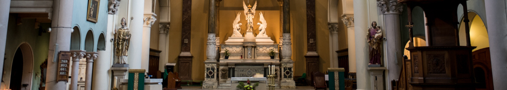

St. Joseph’s is a busy parish community in Highgate, North London with a warm and lively atmosphere.
The church provides a central hub of activity and the opportunity to mingle with people who, though they come from a variety of different backgrounds, social, religious or otherwise, nevertheless share the same positive outlook on life.
Mass are celebrated virtually: Weekdays 9.30AM, Sundays 12 Noon and 7PM. We are both on our website and on St. Josephs Highgate Youtube channel. The doors are always open to those wishing to be involved in our Parish Community.
All are welcome to participate in a range of groups, which are friendly and informal or to simply join us for Worship.